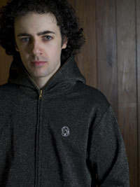

High Contrast
HOSPITAL RECORDS
http://www.highlycontrasting.com
The name High Contrast needs no introduction anymore; though when a young Lincoln Barrett signed on the dotted line back in 2000 he was a complete unknown. Signed on the strength of his mini-disc demos, the Welsh wonder has smashed his way through the d+b scene in no time at all.
His debut longplayer True Colours was released on Hospital to massive critical acclaim in June 2002, paving the way for a move onto the international DJ circuit and helping him become remixer of choice for so many labels inside and outside of the drum+bass community. It was the club sessions and mixing skills that dominated the year since True Colours - with Lincoln making a name for himself as one of the hottest D&B DJs around.
In autumn 2004 we dropped the massive High Society LP; featuring the anthemic singles Twilights Last Gleaming and Racing Green. The album has already become the stuff of legend, with Knowledge Magazine voting it into there top 3 jungle albums of the last 10 years.
More recently after reaching Drum & Bass superstardom he has releaed mix albums for Fabric and Mixmag and seen his White Stripes remix all over Radio 1. Missy Elliot and Blaze have also come knocking for a Contrast remix and the Worlds dance floors have been blown apart by that Gold Digger booty.
2007 saw the High Contrast success story continue, with the gargantuan single If We Ever all over Radio One, followed by arguably his finest album yet Tough Guys Don't Dance.. Rounding the year off with yet another huge remix - this time of Axwell's Ibizan anthem "I Found You", and his DJing skill saw him scoop BBC Radio 1's Essential Mix of the year, no less.
Riding high on the wave of success following Tough Guys, it was straight into 2008 with huge remixes of Utah Saint's "Something Good", Adele's "Hometown Glory" and Eric Prydz's monster hit "Pjanoo".
With High Contrast sitting firmly at dance music's top table, in 2009 he became one of a very rare number indeed, a current recording artist to have released a “best of” album - in the form of High Contrast Confidential, a massive double CD taking in the high points of his first three albums as well as all of his seminal remixes. As he reaches a decade in the game his star continues to shine brighter than ever in 2010 with rave legends Underworld bringing him in for a studio collaboration “Scribble”. Keep your eyes firmly peeled as film and video projects as well as new music all get tee’d up to be unleashed on an expectant world.